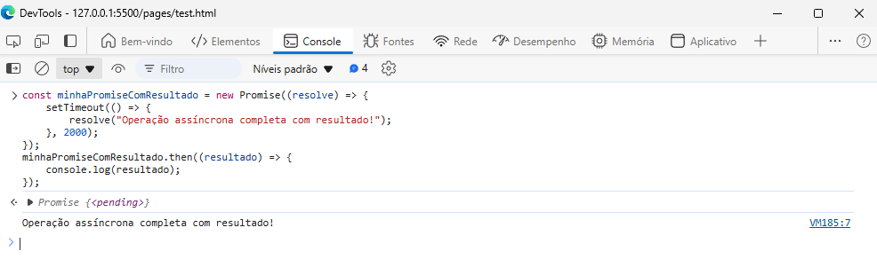

JAVASCRIPT
SEÇÃO PARA DOCUMENTAÇÃO DA SEÇÃO ASYNC
PROMISES
Os Promises são um objeto que representam uma eventual conclusão (ou falha) de uma operação assíncrona juntamente com seu respectivo valor. Elas são uma forma de lidar com operações assíncronas de maneira mais organizada e legível do que usando callbacks tradicionais.
As Promises podem retornar alguns estados:
- Pending (Pendente): A promise ainda está em execução sendo que ela nem foi resolvida e nem rejeitada
- Fulfilled (Cumprida): A promise foi resolvida com sucesso! Assim retornando os dados requisitados
- Rejected (Rejeitada): A promise foi rejeitada, por algum erro ou falha durante a requisição, será retornado um erro
Para começarmos vamos trabalhar por partes!
-
PROMISE
-
RESOLVE
-
REJECT
Uma Promise é criada usando o construtor Promise, que aceita uma função chamada executor para que possamos executar uma tarefa ou um processo:
Exemplo :
Obs : Estamos montando uma Promise com setTimeout() para simular uma busca a uma API ou uma busca assíncrona e após 2 segundos será impresso no console com a utilzação do then()
Se quiser saber mais sobre esses comandos! clique nos respectivos links:
O método resolve() é utilizado quando queremos marcar uma Promise como concluída! Geralmente quando passamos para a API que tal funcionalidade foi efetuada da maneira correta, assim ou finalizando o processo ou passando os resultados para um próximo then
Exemplo :
Obs : Estamos montando uma Promise com uma const recebendo o valor de TRUE para forçar o resolve() dentro da condição
O método reject() é utilizado quando queremos marcar uma Promise como falha! Geralmente quando passamos para a API que tal funcionalidade acabou dando erro em algum processo, assim finalizando o processo e devolvendo a mensagem de erro correspondente
Exemplo :
Obs : Estamos montando uma Promise com uma const recebendo o valor de FALSE para forçar o reject() dentro da condição